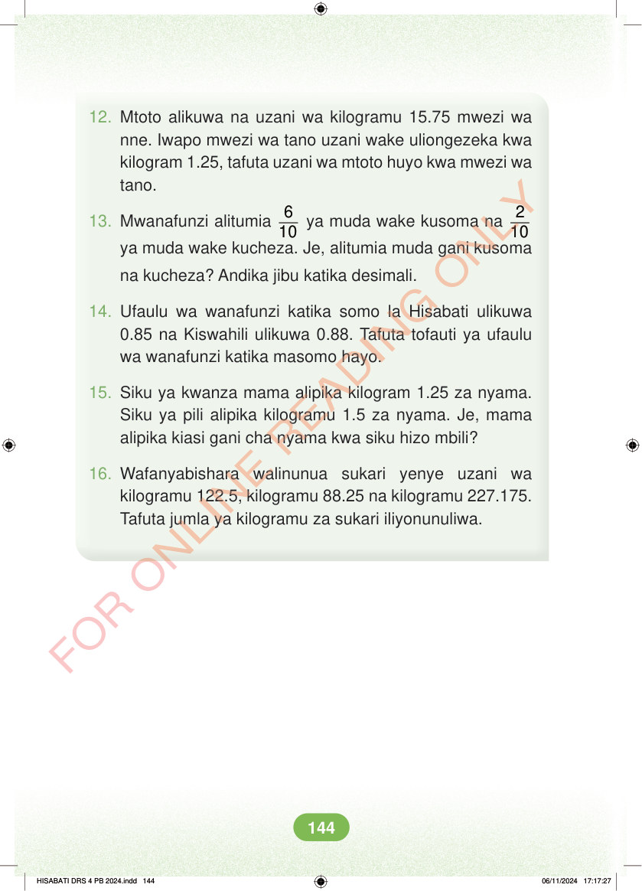

<!DOCTYPE html>
<html lang="sw-TZ"><head><meta charset="utf-8"><meta name="viewport" content="width=device-width,initial-scale=1">
<title>Hisabati: Kitabu cha Mwanafunzi Darasa la Nne</title>
<meta name="title-id" content="pg150_sec001"><meta name="page-section-id" content="157">
<link href="./content/tailwind_output.css" rel="stylesheet"><link href="./assets/libs/fontawesome/css/all.min.css" rel="stylesheet"><link href="./assets/fonts.css" rel="stylesheet">
<style>body{margin:0;background:#eef1ed}main{width:100%;display:flex;justify-content:center;padding:1rem 1rem 5rem;box-sizing:border-box}#content{width:100%;display:flex;justify-content:center}.pdf-page{position:relative;width:min(calc(100vw - 2rem),56rem);aspect-ratio:540.8980102539062/750.6610107421875;background:white;box-shadow:0 4px 24px #0002;overflow:hidden}.pdf-page img{position:absolute;inset:0;width:100%;height:100%;object-fit:fill}</style>
</head><body><main><h1 class="sr-only" id="page-heading">Ukurasa wa 150</h1><div id="content" class="opacity-0"><section role="article" data-section-type="pdf_accessible_page" data-section-id="pg150_sec001" aria-labelledby="page-heading" class="pdf-page"><p class="sr-only" data-id="pg150_gp001_tx001">12. Mtoto alikuwa na uzani wa kilogramu 15.75 mwezi wa nne. Iwapo mwezi wa tano uzani wake uliongezeka kwa kilogram 1.25, tafuta uzani wa mtoto huyo kwa mwezi wa tano. 13. Mwanafunzi alitumia 6 10 ya muda wake kusoma na 2 10 ya muda wake kucheza. Je, alitumia muda gani kusoma na kucheza? Andika jibu katika desimali. 14. Ufaulu wa wanafunzi katika somo la Hisabati ulikuwa 0.85 na Kiswahili ulikuwa 0.88. Tafuta tofauti ya ufaulu wa wanafunzi katika masomo hayo. 15. Siku ya kwanza mama alipika kilogram 1.25 za nyama. Siku ya pili alipika kilogramu 1.5 za nyama. Je, mama alipika kiasi gani cha nyama kwa siku hizo mbili? 16. Wafanyabishara walinunua sukari yenye uzani wa kilogramu 122.5, kilogramu 88.25 na kilogramu 227.175. Tafuta jumla ya kilogramu za sukari iliyonunuliwa. HISABATI DRS 4 PB 2024.indd 144 HISABATI DRS 4 PB 2024.indd 144 06/11/2024 17:17:27 06/11/2024 17:17:27</p></section></div></main><div class="relative z-50" id="interface-container"></div><div class="relative z-50" id="nav-container"></div><script src="./assets/offline-preloader.js?v=audiofix-20260824-1"></script><script src="./assets/scorm.js"></script><script src="./assets/base.bundle.local.js?v=audiofix-20260824-1"></script></body></html>